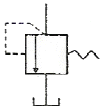
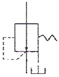
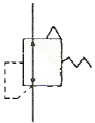
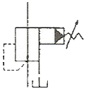

건설기계정비기능사 (2015-04-04 기출문제)
1과목: 건설기계정비(임의구분)
1. 디젤엔진의 노크를 방지하기 위한 방법으로 틀린 것은?
- 세탄가가 높은 여료를 사용한다.
- 실린더 벽의 온도를 높게 유지한다.
- 압축비를 낮게 한다.
- 연료의 착화성을 좋게 한다.
(정답률: 79%)

2. 링기어의 잇수 120, 피니언의 잇수가 12일 때 총배기량이 1500cc이고 기관회전 저항이 7 kgfㆍm이라면 기동전동기가 필요로 하는 최소 회전력은?
- 0.7kgfㆍm
- 1.0kgfㆍm
- 1.2kgfㆍm
- 1.5kgfㆍm
(정답률: 53%)
3. 건설기계용 기관에서 밸브 간극이란?
- 밸브 스템 엔드와 로커암 사이의 간극
- 캠과 로커암 사이의 간극
- 밸브스프링과 밸브 스템 사이의 간극
- 푸시 로드와 캠 사이의 간극
(정답률: 65%)
4. 축전지 셀의 극판수를 증가하면?
- 용량이 감소된다.
- 저항이 증가한다.
- 이용전류가 증가한다.
- 허용전압이 증가한다.
(정답률: 69%)
5. 디젤 연료 계통에 공기 빼기 작업이 불량시 발생될 수 있는 사항으로 가장 거리가 먼 것은?
- 변속이 잘 안된다.
- 엔진 기동이 잘 안된다.
- 분사펌프의 연료 압송이 불량해진다.
- 분사노즐의 분사 상태가 불량해 진다.
(정답률: 74%)
6. 디젤기관에서 가속페달을 밟으면 직접 연결 되어 작용하는 것은?
- 스로틀 밸브
- 연료 분사펌프의 래크와 피니언
- 노즐
- 플라이밍 펌프
(정답률: 65%)
7. 오염된 엔진오일의 색과 그 원인을 표시한 것으로 틀린 것은?
- 검은색 : 장시간 오일 부교환시
- 우유색 : 냉각수 혼입
- 붉은색 : 파워스티어링 오일 혼입
- 회색 : 연소가스 생성물 혼입
(정답률: 70%)
8. 배터리, 점화코일, 점화플러그 등을 합하여 무슨 장치라 하는가?
- 베젠 장치
- 발전 장치
- 점화 장치
- 축전 장치
(정답률: 82%)
9. 4행정 기관은 1사이클당 크랭크축이 몇 회전하는가?
- 1회전
- 2회전
- 3회전
- 4회전
(정답률: 80%)
10. 부동액의 성분이 아닌 것은?
- 알코올
- 글리세린
- 에틸렌글리콜
- 벤졸
(정답률: 69%)
11. 에어컨에서 실내ㆍ외 온도 및 증발기의 온도를 감지하는 센서는?
- 다이오드
- 솔레노이드
- 컨덴서
- 서미스터
(정답률: 70%)
12. 디젤기관의 과열 원인으로 틀린 것은?
- PCV밸브 작동불량
- 수온조절기 작동불량
- 라디에이터의 막힘
- 냉각수의 부족
(정답률: 79%)
13. 연소실 체적이 50cc, 배기량이 360cc인 엔진을 보링한 후에 배기량이 370cc가 되었다. 압축비는? (단, 연소실 체적은 변화가 없음)
- 7.4:1
- 8.4:1
- 9.7:1
- 10.4:1
(정답률: 56%)
14. 교류 발전기에 관한 설명으로 옳지 않은 것은?
- 교류를 직류로 정류하는데 실리콘 다이오드를 사용한다.
- 브러시는 슬립링과 접촉한다.
- 스테이터와 로터로 구성된다.
- 계자 코일은 스테이터에 감고 전기자 코일은 로터에 감긴다.
(정답률: 60%)
15. 건설기계의 제동등에 대한 설명으로 틀린 것은?
- 제동등의 등광색은 적색이다.
- 제동등 스위치는 브레이크 페달을 밟으면 작동된다.
- 제동등 좌, 우 램프는 병렬로 접속되어 있다.
- 제동등 전구는 50~60W를 가장 많이 사용한다.
(정답률: 70%)
16. 전자제어 디젤분사장치의 장점이 아닌 것은?
- 배출가스 규제수준의 충족
- 기관 소음의 감소
- 연료소비율 증대
- 최적화된 정숙운전
(정답률: 69%)
17. 기관의 피스톤 핀의 고정 방법이 아닌 것은?
- 고정식
- 반고정식
- 전부동식
- 반부동식
(정답률: 66%)
18. 기관에 사용되는 밸브 스프링 점검과 관계없는 것은?
- 직각도
- 코일의 수
- 자유 높이
- 스프링 장력
(정답률: 68%)
19. 디젤기관의 실린더 헤드 변형은 무엇으로 점검하는가?
- 마이크로 미터와 강철자
- 다이얼 게이지와 직각자
- 플라스틱 게이지와 필러 게이지
- 곧은자와 필러 게이지
(정답률: 61%)
20. 축전지를 충전화면 음극판은 무엇으로 되는가?
- PbO2
- Pb
- PbSO4
- 2H2O
(정답률: 56%)
2과목: 일반기계공학(임의구분)
21. 불도저의 최종 감속장치에서 감속비가 제일 클 때 사용하는 감속 기구는?
- 1단 감속 기구
- 2단 감속 기구
- 유성기어 기구
- 베벨기어 기구
(정답률: 59%)
22. 리코일 스프링의 완충방식이 아닌 것은?
- 코일 스프링식
- 다이어프램 스프링식
- 질소가스 스프링식
- 토션바 스프링식
(정답률: 47%)
23. 조어진 조건을 가진 굴삭기의 작업량은 얼마인가? (단, 버킷용량:600m3, 사이클시간:0.5min, 버킷 계수:1, 토량 환산계수:1.2, 작업효율:85%이다.)
- 73.44m3/h
- 93.44m3/h
- 2204m3/h
- 4406m3/h
(정답률: 30%)
24. 유압작동유의 기포발생을 방지하거나 저장하는 기능을 하는 것은?
- 유압밸브
- 유압탱크
- 유압펌프
- 유압모터
(정답률: 78%)
25. 토크 컨버터의 기본 구성품이 아닌 것은?
- 임펠러(펌프)
- 베인
- 터빈(런너)
- 스테이터
(정답률: 58%)
26. 유압 작동유가 갖추어야 할 조건에 대한 설명으로 틀린 것은?
- 방청성이 좋을 것
- 온도에 대하여 점도변화가 작을 것
- 인화점이 낮을 것
- 화학적으로 안정될 것
(정답률: 74%)
27. 유체 클러치 오일이 갖추어야 할 조건 중 틀린 것은?
- 비점이 높을 것
- 착화점이 높을 것
- 점도가 높을 것
- 비중이 클 것
(정답률: 54%)
28. 크레인의 붐은 상부회전체에 무엇으로 연결되어 있는가?
- 볼이음
- 체인
- 세레이션
- 핀
(정답률: 56%)
29. 유압회로 중 속도제어회로가 아닌 것은?
- 차동 회로
- 로크 회로
- 감속 회로
- 동기 회로
(정답률: 55%)
30. 트랙이 밑으로 처지지 않도록 받쳐주는 역할을 하는 것은?
- 상부롤러
- 하부롤러
- 프런트아이들러
- 롤러가드
(정답률: 59%)
31. 스크레이퍼의 작업장치 중 에이프런(apron)에 대한 설명으로 맞는 것은?
- 트랙터와 볼(bowl)을 연결해 주는 부분이다.
- 볼(bowl) 앞에 설치된 토사의 배출구를 닫아주는 문이다.
- 토사를 적재할 때 볼(bowl)의 뒷벽을 구성한다.
- 배토 시에는 아래로 내려 토사가 배출되도록 한다.
(정답률: 53%)
32. 지게차에서 리프트 실린더의 상승력이 부족한 원인과 거리가 먼 것은?
- 유압펌프의 불량
- 오일필터의 막힘
- 리프트 실린더의 피스톤실부 손상
- 틸트 컨트롤 제어부 손상
(정답률: 61%)
33. 유압 실린더의 피스톤 로드가 가하는 힘이 5000kgf, 피스톤 속도가 3.8m/min인 경우 실린더 내경이 8cm라면 소요되는 마력은 약 얼마인가?
- 66.67ps
- 33.78ps
- 8.89ps
- 4.22ps
(정답률: 33%)
34. 정용량형 유압펌프에서 토출되지 않거나 토출량이 적은 원인으로 틀린 것은?
- 펌프의 회전방향이 틀리다.
- 유압펌프의 회전속도가 빠르다.
- 작동유가 부족하다.
- 벨트 구동식에서 V벨트가 헐겁다.
(정답률: 67%)
35. 도로주행 건설기계의 공기브레이크에서 릴레이밸브(relay valve)에 관한 설명으로 틀린 것은?
- 브레이크 밸브로부터 공급되는 공기압을 뒤 브레이크 챔버로 보낸다.
- 앞ㆍ뒤 바퀴의 제동시기를 일치시킨다.
- 브레이크 페달을 놓았을 때 신속히 브레이크가 풀리게 한다.
- 브레이크 챔버와 라이닝 사이에 설치되어 있다.
(정답률: 46%)
36. 스크레이퍼의 성능과 관계 없는 것은?
- 주행속도
- 사이클 타임
- 보울의 용량
- 장비의 중량
(정답률: 39%)
37. 압력제어밸브 중 파일럿 작동형 감압밸브의 기호는?




(정답률: 57%)
38. 반복작업 중 일을 하지 않는 동안에 펌프로부터 공급되는 작동유를 기름탱크에 저압으로 되돌려 보냄으로써 유압펌프를 무부하로 만드는 회로는?
- 중압 회로
- 축압기 회로
- 언로더 회로
- 차동실린더 회로
(정답률: 70%)
39. 모터 그레이더 조향장치의 부품이 아닌 것은?
- 타이로드
- 너클
- 드래그 링크
- 스캐리파이어
(정답률: 63%)
40. 종감속 기어에서 구동 피니언의 물림이 링기어 잇면의 이뿌리 부분에 접촉하는 것은?
- 플랭크 접촉
- 페이스 접촉
- 토 접촉
- 힐 접촉
(정답률: 52%)
3과목: 안전관리(임의구분)
41. 블레이드 용량이 0.845m3이고 블레이드 높이가 650mm일 때 블레이드 길이는 얼마인가?
- 600mm
- 720mm
- 1440mm
- 2000mm
(정답률: 33%)
42. 기중기에서 붐각을 크게하면?
- 운전 반경이 작아진다.
- 기중 능력이 작아진다.
- 임계 하중이 작아진다.
- 붐의 길이가 짧아진다.
(정답률: 55%)
43. 액슬축의 차량 중량지지 방식이 아닌 것은?
- 전부동식
- 1/4 부동식
- 반부동식
- 3/4 부동식
(정답률: 57%)
44. 모터 그레이더에서 앞바퀴 경사장치의 경사각은 어느 정도인가?
- 0~10°
- 20~30°
- 30~40°
- 40~50°
(정답률: 67%)
45. 건설기계에서 유압펌프를 교환한 후의 시운전 요령에 해당하지 않는 것은?
- 유압라인의 공기빼기 작업을 한다.
- 펌프의 회전방향이 틀리지 않도록 한다.
- 유압 작동유가 탱크에 채워져 있는가를 확인한다.
- 펌프의 성능확인을 위해 시동 후 2~3초 이내에 최대부하 운전을 한다.
(정답률: 78%)
46. 탄산가스 성질에 관한 사항으로 가장 거리가 먼 것은?
- 대기 중에서 기체로 존재하며 비중은 1.53으로 공기보다 무겁다.
- 공기 중 농도가 크면 눈, 코, 입 등에 자극이 느껴진다.
- 무색, 무취, 무미이다.
- 저장, 운반이 불편하며 비교적 값이 비싸다.
(정답률: 60%)
47. 이산화탄소 아크용접과 관련이 없는 것은?
- 탄산가스 용기
- 용접기
- 산소
- 와이어 송급장치
(정답률: 57%)
48. 최대정격 2차 전류가 160A, 허용 사용율이 30%, 실제의 용접 전류가 140A일 때 정격 사용률은 약 몇 %인가?
- 23
- 33
- 43
- 53
(정답률: 38%)
49. 용해 아세틸렌 가스충전 압력으로 가장 알맞은 것은?
- 160kgf/cm2
- 150kgf/cm2
- 30kgf/cm2
- 15kgf/cm2
(정답률: 38%)
50. 가스절단 시 양호한 절단면을 얻기 위한 품질 기준과 거리가 먼 것은?
- 슬래그 이탈이 양호할 것
- 절단면의 표면각이 예리할 것
- 절단면이 평활하며 노치 등이 없을 것
- 드래그의 홈이 높고 가능한 클 것
(정답률: 64%)
51. 도저의 성능과 안전작업에 대한 설명 중 틀린 것은?
- 불도저의 등판능력은 30° 정도이다.
- 틸트 도저의 좌ㆍ우 경사 한계각은 40°이다.
- 평탄도로에서 견인력은 대체로 자중을 넘지 못한다.
- 절토작업, 굳은 땅 옆으로 자르기, 제설작업 등에 쓰인다.
(정답률: 42%)
52. 건설기계 엔진의 공회전 상태에서 점검사항과 가장 거리가 먼 것은?
- 에어 크리너 청소
- 각 접속부의 누유
- 유압계통 이상 유무
- 이상음 및 배기가스 색
(정답률: 75%)
53. 전기용접 작업 시 주의사항으로 틀린 것은?
- 용접작업자는 용접기 내부에 손을 대지 않도록 한다.
- 용접전류는 아크가 발생하는 도중에 조절한다.
- 용접준비가 완료된 후 용접기 전원스위치를 ON 시킨다.
- 용접 케이블의 접속상태가 양호한가를 확인한 후 작업하여야 한다.
(정답률: 79%)
54. 배터리를 탈거 후 급속충전 또는 보충전 할 때 안전측면에서 주의를 기울여야 할 사항과 가장 거리가 먼 것은?
- 화기
- 점화스위치
- 환기
- 전해액 온도
(정답률: 64%)
55. 고전압 전선 부근에서 기중작업 시 안전거리로 틀린 것은?
- 전선 전압이 6,600V일 때 3m 이상유지
- 전선 전압이 33,00V일 때 4m 이상유지
- 전선 전압이 66,000V일 때 5m 이상유지
- 전선 전압이 154,000V일 때 6m 이상유지
(정답률: 49%)
56. 제1종 유기용제의 색상 표시 기준은?
- 빨강
- 파랑
- 노랑
- 흰색
(정답률: 67%)
57. 자동차 정비공장에서 폭발의 우려가 있는 가스, 증기, 또는 분진을 발산하는 장소에서 금지해야 할 사항에 속하지 않는 것은?
- 화기의 사용
- 과열함으로써 점화의 원인이 될 우려가 있는 기계의 사용
- 사용 도중 불꽃이 발생하는 공구의 사용
- 불연성 재료의 사용
(정답률: 74%)
58. 다이얼 게이지로 휨을 측정할 때 올바른 설치방법은?
- 스핀들의 앞 끝을 보기 좋은 위치에 설치한다.
- 스핀들의 앞 끝을 기준면인 축(shaft)에 수직으로 설치한다.
- 스핀들의 앞 끝을 공작물의 우측으로 기울게 설치한다.
- 스핀들의 앞 끝을 공작물의 좌측으로 기울게 설치한다.
(정답률: 74%)
59. 전기로 작동되는 기계운전 중 기계에서 이상한 소음, 진동, 냄새 등이 날 경우 가장 먼저 취해야 할 조치는?
- 즉시 전원을 내린다.
- 상급자에게 보고한다.
- 기계를 가동하면서 고장여부를 파악한다.
- 기계 수리공이 올 때까지 기다린다.
(정답률: 82%)
60. 해머 작업 시 주의사항이 아닌 것은?
- 해머를 휘두르기 전에 반드시 주위를 살핀다.
- 해머머리가 손상된 것은 사용하지 않는다.
- 오래 작업하면 손바닥에 물집이 생기므로 장갑을 끼고 있다.
- 해머로 녹슨 것을 때릴 때에는 반드시 보안경을 쓴다.
(정답률: 77%)